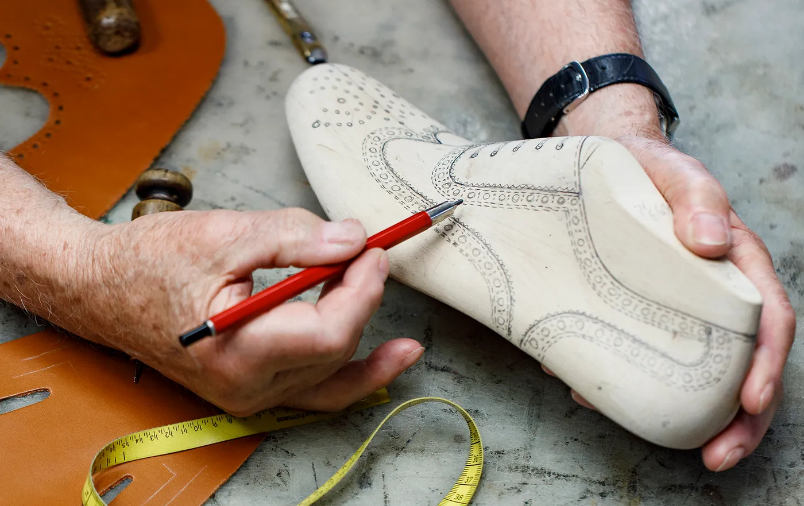
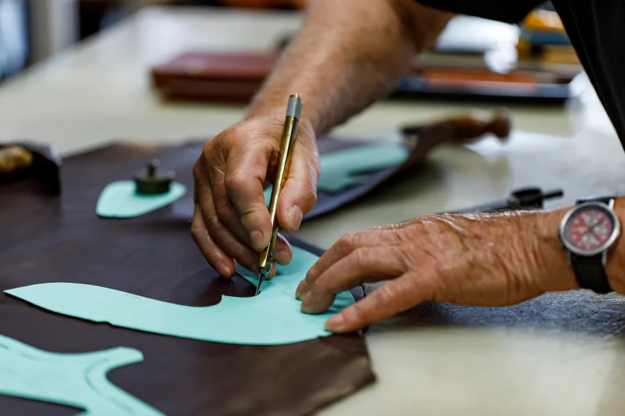
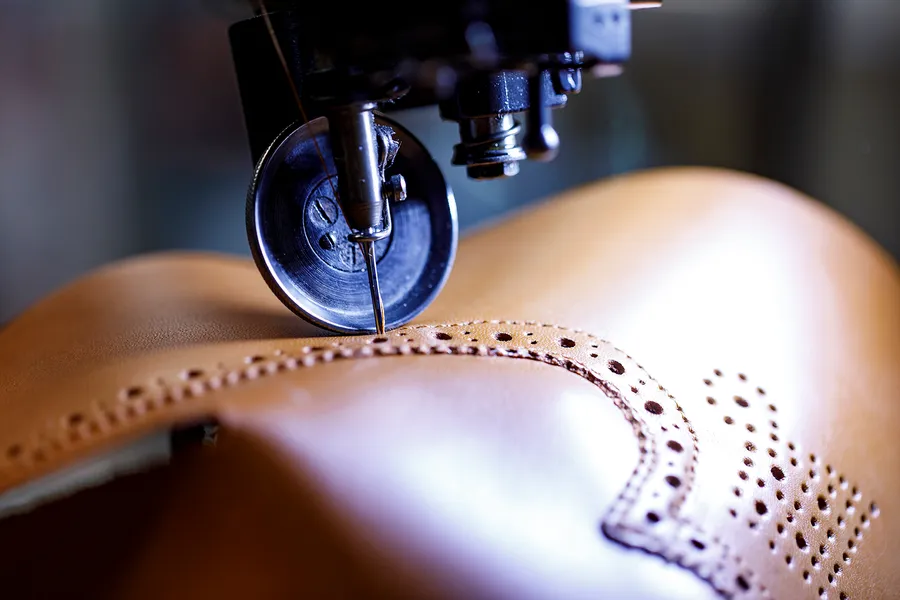
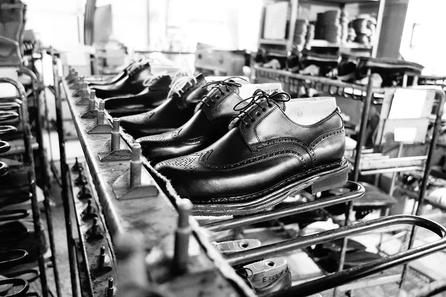

Das Handwerk
Rahmengenäht, nicht verklebt
Etwa 90 Prozent aller hergestellten Schuhe werden industriell verklebt. Die Herstellung rahmengenähter Schuhe erfordert hingegen bis zu 250 Arbeitsgänge und viel handwerkliches Geschick.

Das Besondere ist, dass das Oberteil mit dem Schuhboden flexibel durch Nähte verbunden wird, nicht starr verklebt.
Das Konstruktionsprinzip
Ein Lederband, der Rahmen, läuft rund um den Schuh. Zunächst werden das Oberteil und die Innensohle vernäht. Anschließend verbindet eine starke Naht diesen Rahmen mit der Laufsohle. Genau diese Machart macht den Unterschied.
Warum rahmengenäht
- Deutlich längere Lebensdauer
- Reparierbar statt Wegwerfschuh
- Individuelle Anfertigung möglich
- Höherwertige Materialien
- Traditionelle, exakte Handwerkskunst
- Angenehmes Fußklima
- Edles, stilsicheres Aussehen
Von Hand
Wie ein Schuh entsteht

Modellentwicklung
Von Beginn an mit höchster Präzision von Hand designt und entwickelt.

Zuschnitt
Auswahl und Qualitätsprüfung der Leder. Da Leder ein Naturprodukt ist, braucht der Zuschnitt erfahrene Hände.

Stepperei
Die einzelnen Lederteile werden in vielen Schritten zusammengeführt und vernäht.

Zwicken und Boden
Das Herz einer rahmengenähten Manufaktur. Hier erhält der Schuh seine endgültige Form.

Finish
Abschließender Schliff, Polieren und Qualitätskontrolle.
250
Arbeitsschritte je Paar, von Hand
200
Lederarten aus italienischen Gerbereien
2
Häuser in Graz und Salzburg